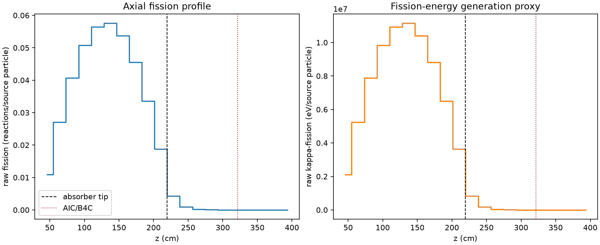
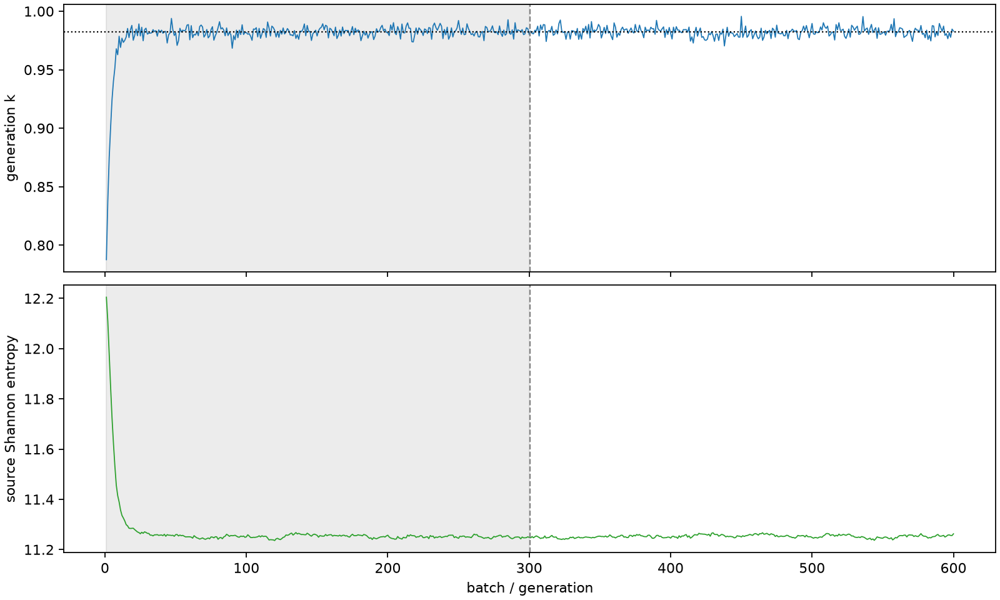

| field | value |
|---|---|
| experiment | V2-STAGE_32_OGRENCI_03-0005 |
| k | 0.9823311110175647 |
| MC standard error | 0.00016750784702104248 |
| seconds | 979.5423855960034 |
| acceptance | not_assessed |
| convergence | review_required |
Completed is output integrity only; physical and statistical review required. Zero tallies do not prove zero production or zero uncertainty.
| diagnostic | value |
|---|---|
| geometric fuel voxels | 5280 |
| zero fission tally voxels | 650 |
| low signal fuel voxels | 1664 |
| low signal fission share | 7.089146616433956e-05 |
| low signal kappa share | 7.092709541574733e-05 |
| important fission share | 0.9500024512267736 |
| previous filter included | 3616 |
| duration estimate s | 1562.5173488400023 |
| actual minus estimate s | -582.9749632439989 |
| fission relative MC error | statistics |
|---|---|
| all_geometric_fuel | {"voxels": 5280, "positive_mean_voxels": 4630, "zero_mean_voxels": 650, "undefined_relative_error_voxels": 650, "median": 0.011034372731596583, "p95": 0.9227892830509664, "maximum": 1.0000000000000002} |
| low_signal | {"voxels": 1664, "positive_mean_voxels": 1014, "zero_mean_voxels": 650, "undefined_relative_error_voxels": 650, "median": 0.6222688859260845, "p95": 1.0, "maximum": 1.0000000000000002} |
| important_95pct | {"voxels": 2322, "positive_mean_voxels": 2322, "zero_mean_voxels": 0, "undefined_relative_error_voxels": 0, "median": 0.006772174749694196, "p95": 0.010246645673698679, "maximum": 0.01209252145383553} |
| outside_previous_filter | {"voxels": 1664, "positive_mean_voxels": 1014, "zero_mean_voxels": 650, "undefined_relative_error_voxels": 650, "median": 0.6222688859260845, "p95": 1.0, "maximum": 1.0000000000000002} |
| kappa_fission relative MC error | statistics |
|---|---|
| all_geometric_fuel | {"voxels": 5280, "positive_mean_voxels": 4630, "zero_mean_voxels": 650, "undefined_relative_error_voxels": 650, "median": 0.01101963920922782, "p95": 0.9223635125963274, "maximum": 1.0000000000000002} |
| low_signal | {"voxels": 1664, "positive_mean_voxels": 1014, "zero_mean_voxels": 650, "undefined_relative_error_voxels": 650, "median": 0.6209293086514678, "p95": 1.0, "maximum": 1.0000000000000002} |
| important_95pct | {"voxels": 2322, "positive_mean_voxels": 2322, "zero_mean_voxels": 0, "undefined_relative_error_voxels": 0, "median": 0.006763381708792794, "p95": 0.010233906881378272, "maximum": 0.012075482701756683} |
| outside_previous_filter | {"voxels": 1664, "positive_mean_voxels": 1014, "zero_mean_voxels": 650, "undefined_relative_error_voxels": 650, "median": 0.6209293086514678, "p95": 1.0, "maximum": 1.0000000000000002} |
| axial bin | fission share | kappa-fission share |
|---|---|---|
| 1 | 0.02715489345426163 | 0.027156184744145884 |
| 2 | 0.06749564062776878 | 0.06749518135860837 |
| 3 | 0.10161569009010084 | 0.1016150414642251 |
| 4 | 0.12685521814621478 | 0.12685427966638102 |
| 5 | 0.1409239399642861 | 0.1409228296756477 |
| 6 | 0.1437298275025254 | 0.1437286500346341 |
| 7 | 0.13421282522778882 | 0.1342118600902177 |
| 8 | 0.11369907518400849 | 0.11369812070951066 |
| 9 | 0.08388426378401755 | 0.08388347696069284 |
| 10 | 0.04683610304489817 | 0.04683611931923207 |
| 11 | 0.010601426703659685 | 0.010605708463707487 |
| 12 | 0.0023085191485682183 | 0.002309618308876236 |
| 13 | 0.0005265443874371605 | 0.0005268217503143977 |
| 14 | 0.0001227495542016198 | 0.0001228023831269159 |
| 15 | 2.4880279799377023e-05 | 2.489592913787488e-05 |
| 16 | 6.23744502020847e-06 | 6.241395689151477e-06 |
| 17 | 1.7052453288096789e-06 | 1.7074011851549913e-06 |
| 18 | 3.211690004799563e-07 | 3.215061685636886e-07 |
| 19 | 1.3904111399965782e-07 | 1.388384987329973e-07 |
| 20 | 0.0 | 0.0 |
Histories include the inactive-to-active transition at batch 300. kappa-fission approximates fission energy production, not total heat deposition.

